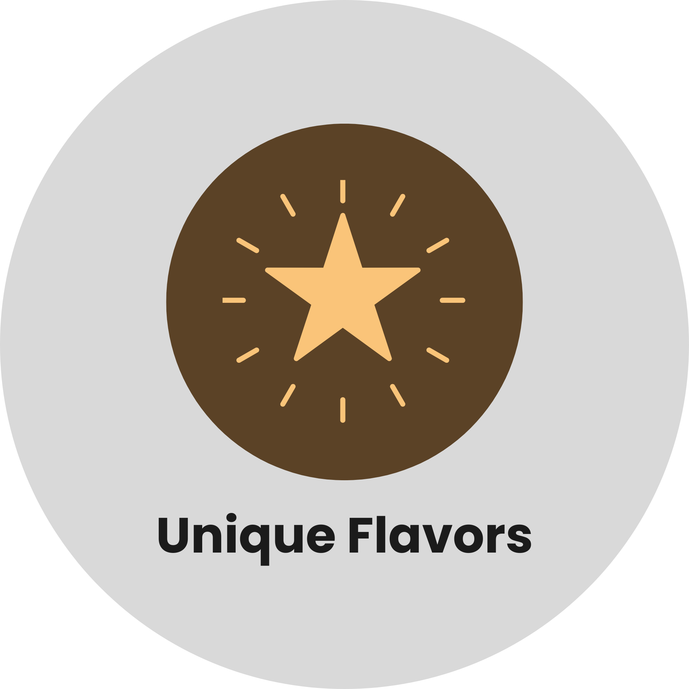
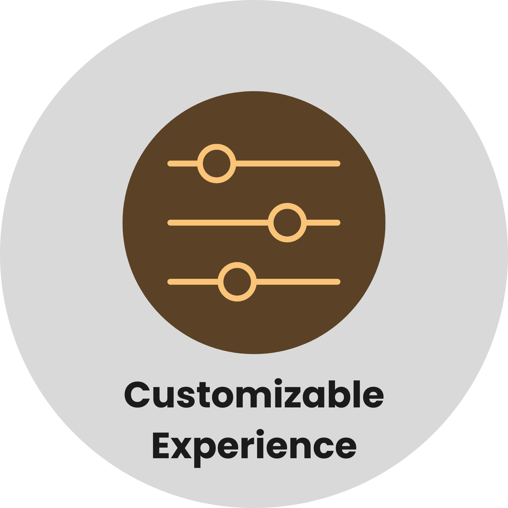

Welcome to UYU CHA, your go-to spot for milk tea, coffee, snacks, meals, and refreshing frappes. We
serve a variety of delicious drinks crafted to satisfy every craving and delight your taste buds.
Whether you're here to relax, grab a quick bite, or hang out with friends, UYU CHA offers the
perfect atmosphere and flavors. Our trendy and tasty beverages are sure to become your new
favorites!
UYU CHA is derived from the Korean word, means “MILKTEA”. Originally, milk tea was simply just tea with milk, but due to food’s innovation, it now has various flavors. Established 14th of June year 2022 in Malinta, Valenzuela City. Founded by Rita Enguero with co-share Cristina Solo and Grace Lyn Villarta . It started since we tasted different tastes of milk Tea and decided to start up a business, so we created our own sets of flavors.
Welcome to UYU CHA, your go-to spot for milk tea, coffee, snacks, meals, and refreshing frappes. We
serve a variety of delicious drinks crafted to satisfy every craving and delight your taste buds.
Whether you're here to relax, grab a quick bite, or hang out with friends, UYU CHA offers the
perfect atmosphere and flavors. Our trendy and tasty beverages are sure to become your new
favorites!
UYU CHA is derived from the Korean word, means “MILKTEA”. Originally, milk tea was simply just tea with milk, but due to food’s innovation, it now has various flavors. Established 14th of June year 2022 in Malinta, Valenzuela City. Founded by Rita Enguero with co-share Cristina Solo and Grace Lyn Villarta . It started since we tasted different tastes of milk Tea and decided to start up a business, so we created our own sets of flavors.
At UYU CHA, our mission is to be a cup full of stories. We believe that every drink has the power to uplift and connect, whether it’s a Cup of Happiness, a Cup of Success, or a Cup of Comfort. We’re here to share in the celebrations and soothe the everyday moments with handcrafted milk teas and a heart-first approach. With every cup, we aim to build relationships, create memories, and offer a little more love to our Chingus—one sweet sip at a time.
At UYU CHA, our vision is to be one of the leading cafés that makes life sweeter in every sip. We aspire to be more than just a milk tea destination—we want to be a warm, welcoming space where our Chingus (our beloved friends) feel a sense of joy, comfort, and connection. Every cup we serve is crafted with care, blending tradition with creativity to create flavors that inspire smiles. Through quality, community, and a touch of Korean-inspired charm, we aim to become a meaningful part of our Chingus’ everyday lives.



